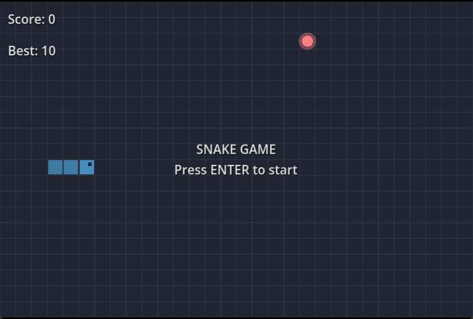

После добавления логики сохранения рекордов и настройки интерфейса, наша игра полностью готова! Теперь вы можете запустить проект, нажав кнопку Play в правом верхнем углу редактора или клавишу F5 на клавиатуре.

Поздравляем! 🎉
Вы успешно создали свою первую полноценную 2D-игру на Godot Engine. В процессе разработки вы познакомились с основами языка GDScript, научились работать с узлами (Nodes), обрабатывать пользовательский ввод и программно отрисовывать графику.